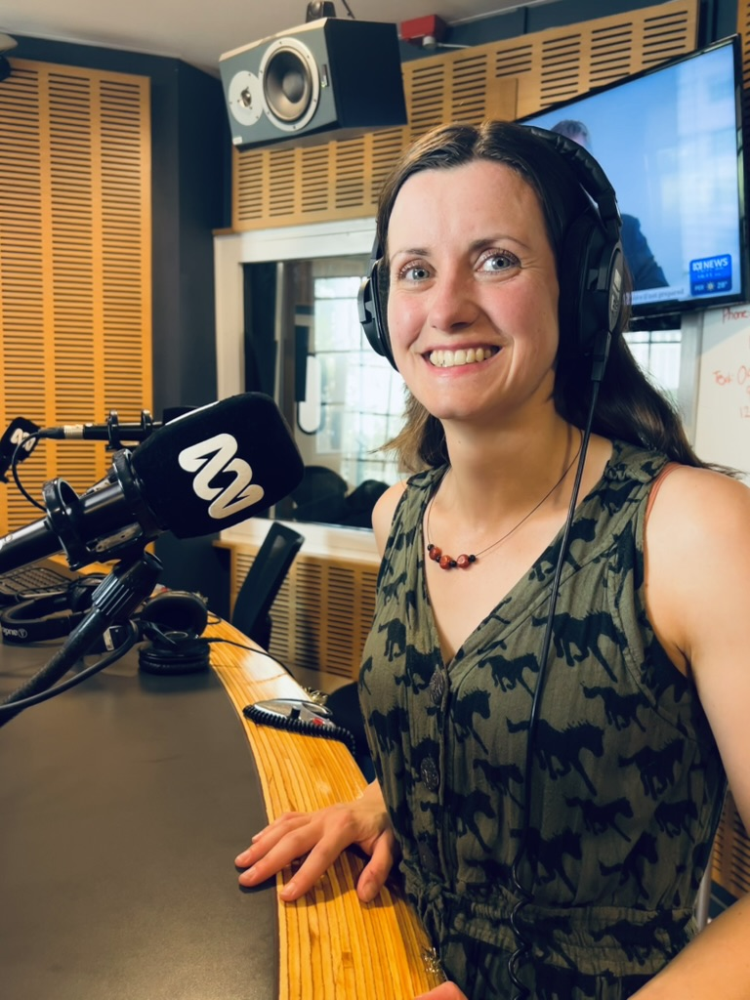

Media
Radio

- ABC Newcastle Drive with Jenny Marchant (July 28, 2025) — “Assessing hearing by vision.” Audio no longer available.
- ABC Newcastle Drive with Jenny Marchant (December 9, 2025) — “What ASMR does to your brain.” Audio no longer available.
Web articles
- HMRI: First researchers announced for accelerator program tackling sepsis, stroke, IVF and hearing (May 22, 2025) — includes my project on assessing hearing through visual behaviour.
- HMRI: The science behind ASMR and its benefits for stress and relaxation (December 3, 2025) — features my comments on ASMR and brain mechanisms.